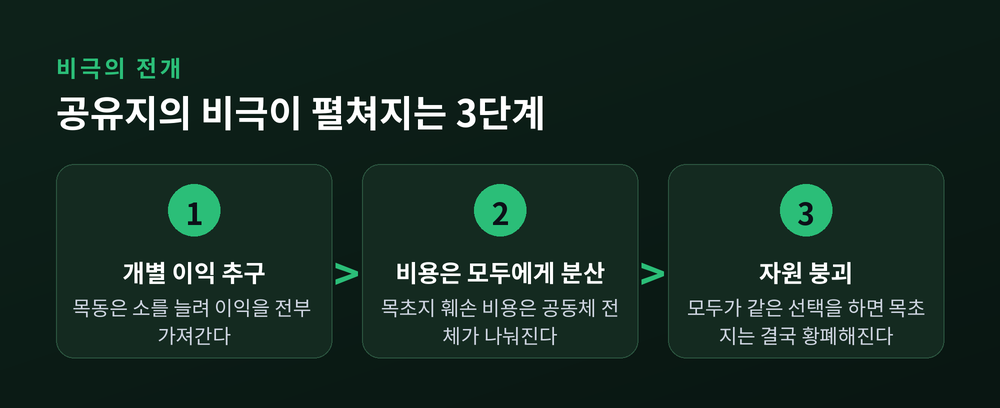
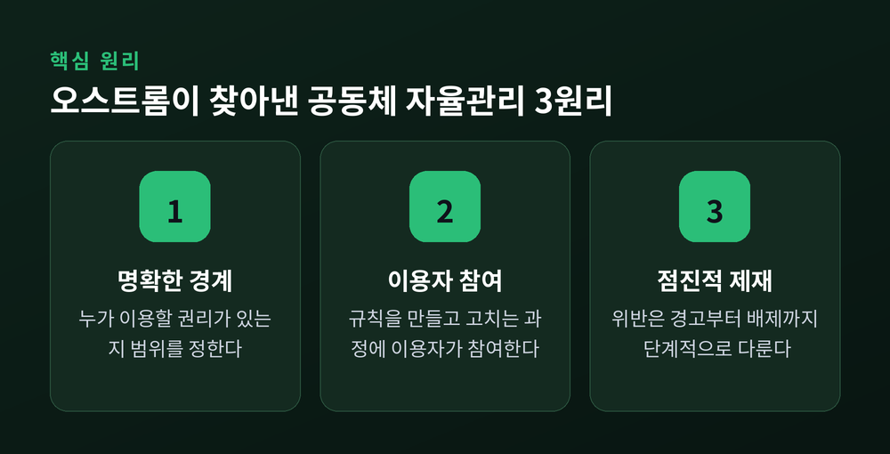
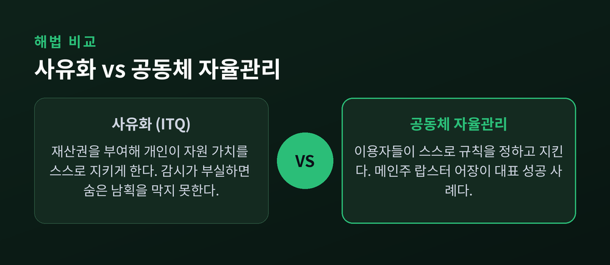

경합성·배제성으로 보는 공공재·공유자원, 그리고 오스트롬의 해법
오늘은 "공유지의 비극"에 대해 이야기해 보려 합니다. 마을 목초지든 어장이든, 주인 없는 자원은 왜 유독 쉽게 망가지는지, 그리고 이를 막는 방법은 무엇인지 정리해 보겠습니다.
경제학은 재화를 두 가지 기준으로 나눕니다.
하나는 경합성입니다. 내가 쓰면 남이 쓸 몫이 줄어드는지를 봅니다.
다른 하나는 배제성입니다. 돈을 내지 않은 사람을 이용에서 막을 수 있는지를 봅니다.
이 두 기준을 겹치면 재화는 네 칸으로 나뉩니다.
경합적이면서 배제 가능한 것은 사적재입니다. 빵이나 옷이 여기 속합니다.
비경합적이면서 배제 불가능한 것은 공공재입니다. 공기, 가로등, 국방이 대표적입니다.
경합적인데 배제가 불가능한 것은 공유자원입니다. 공해상의 물고기, 지하수가 그렇습니다.
비경합적인데 배제는 가능한 것은 클럽재입니다. 케이블TV나 유료 스트리밍이 여기 해당합니다.
오늘 이야기의 주인공은 이 중 두 번째와 세 번째, 공공재와 공유자원입니다. 둘 다 "배제가 안 된다"는 공통점을 갖고 있습니다만, 문제가 벌어지는 방식은 조금 다릅니다.
공공재는 비배제적입니다. 일단 만들어지면 누구도 이용에서 뺄 수 없습니다.
그래서 개인 입장에서는 굳이 비용을 대지 않아도 됩니다. 남이 만들면 나도 어차피 쓸 수 있으니까요.
모두가 같은 계산을 하면 결과는 뻔합니다. 아무도 비용을 대지 않고, 필요한 만큼의 공공재가 만들어지지 않습니다.
이것이 무임승차 문제이고, 공공재가 시장에만 맡기면 과소공급되는 이유입니다.
가로등을 예로 들어보겠습니다. 마을 사람 모두가 가로등의 혜택을 누리지만, 누가 먼저 나서서 돈을 내겠습니까. 다들 옆집이 내주기를 기다립니다. 그러다 보면 가로등은 영영 세워지지 않습니다.
공유자원은 조금 다른 방식으로 무너집니다. 배제가 안 되는 건 같지만, 여기에 경합성까지 더해지기 때문입니다.
생태학자 개릿 하딘은 1968년 학술지 Science에 발표한 논문 "The Tragedy of the Commons"에서 이 문제를 목초지 우화로 설명했습니다. 이 논문은 지금까지 3만 8천 회 넘게 인용되며, 기후변화부터 어업 정책까지 폭넓게 영향을 미쳤습니다.
우화는 이렇습니다. 여러 목동이 함께 쓰는 공동 목초지가 있습니다. 목동들은 저마다 자기 소 떼를 늘립니다.
소 한 마리를 더 풀어놓았을 때 생기는 이익은 그 목동 한 사람이 전부 가져갑니다. 하지만 그로 인한 목초지 훼손 비용은 모든 목동이 나눠 짊어집니다.
이익은 즉시, 전액 나에게. 비용은 나중에, 나눠서 모두에게.
그러니 개별 목동 입장에서는 소를 계속 늘리는 쪽이 합리적입니다. 문제는 모든 목동이 똑같이 합리적으로 행동한다는 데 있습니다. 결국 목초지는 감당할 수 없을 만큼 훼손되고, 모두가 손해를 봅니다.

하딘은 이를 막으려면 이용량을 제한하거나 재산권을 설정하는 식의 제약이 필요하다고 봤습니다.
이론만으로 끝나는 이야기가 아닙니다. 실제 사례가 여럿 있습니다.
가장 잘 알려진 예는 뉴펀들랜드 대구 어장입니다. 1990년대 과도한 남획으로 한때 번성했던 대구 개체수가 붕괴했습니다. 결국 조업 전면 중단(모라토리엄)이 선포됐고, 수천 개의 일자리가 사라졌습니다. 수십 년이 지난 지금도 그 지역은 완전히 회복하지 못했습니다.
대서양 참다랑어 역시 과도한 어획으로 개체수가 크게 줄었습니다. 2018년 기준으로는 전 세계 어장의 3분의 2가 이미 회복 불가능한 수준까지 남획된 상태로 분류됩니다.
지하수도 사정이 비슷합니다. 미국에서는 인구 절반이 지하수를 식수원으로 쓰고, 농업용으로도 하루 약 500억 갤런이 소비됩니다. 개인이 과도하게 퍼올릴수록 다시 채워지는 속도를 앞지르고, 그 피해는 모든 이용자에게 돌아갑니다.
가장 큰 규모의 사례는 아마 대기, 곧 기후변화일 것입니다. 지구 대기는 전형적인 공유자원입니다. 온실가스는 전 지구에 영향을 미치지만, 배출을 줄일 책임은 개별 국가에 흩어져 있고 어느 나라도 이를 강제할 수 없습니다. 1인당 배출량이 거의 없는 가난한 나라에서도, 배출 최상위권 나라에서도 대기 중 탄소 농도는 똑같은 속도로 올라갑니다. 그래서 기후변화는 종종 "궁극의 공유지의 비극"이라 불립니다.
공유지의 비극을 막는 방법으로 오랫동안 두 가지가 꼽혀 왔습니다.
첫째는 정부 개입입니다. 국가가 세금으로 공공재를 직접 공급하거나, 공유자원의 이용량을 규제·과세로 통제하는 방식입니다. 어획 총량 규제나 탄소세가 여기 해당합니다.
둘째는 사유화, 즉 재산권을 부여하는 방식입니다. 어업에서는 개별양도성할당량(ITQ)이 대표적입니다. 어부 각자에게 어획 쿼터를 나눠주고 이를 사고팔 수 있게 하면, "누가 먼저 잡느냐"의 경쟁이 "얼마나 지속가능하게 잡느냐"의 문제로 바뀝니다. 1983년 아이슬란드, 1986년 뉴질랜드가 초기에 이를 도입했고, 캐나다 브리티시컬럼비아 넙치 어장에서는 실제로 자원량 회복과 어획량 개선이 보고됐습니다.
다만 ITQ가 만능은 아닙니다. 감시와 단속이 뒷받침되지 않으면 숨은 어획을 막지 못합니다. 쿼터는 자원 자체에 대한 완전한 소유권이 아니라 "총허용량 중 일부를 잡을 권리"에 그치기 때문에, 진정한 재산권이라 보기 어렵다는 지적도 있습니다. 소규모 어민의 실업이 늘고 지역공동체가 빈곤해지는 부작용도 함께 보고됩니다.
정치학자 엘리너 오스트롬은 하딘의 전제, 즉 "공유지는 필연적으로 파괴된다"는 명제에 동의하지 않았습니다.
그는 정부도 사유화도 거치지 않고, 공동체 스스로 규칙을 만들어 공유자원을 지속가능하게 관리해온 사례들을 세계 곳곳에서 확인했습니다. 필리핀의 관개공동체, 일본의 마을 공유림, 스위스 산간마을의 공동목초지 같은 곳들입니다. 1990년 저서 Governing the Commons에서 그는 이 현장연구 결과를 집대성했습니다. 2009년, 그는 "경제 거버넌스, 특히 공유지에 관한 분석"을 인정받아 노벨 경제학상을 받았습니다. 노벨 경제학상을 받은 최초의 여성이었습니다.
오스트롬이 정리한 성공 조건은 여덟 가지입니다.
명확한 경계를 정할 것. 지역 조건에 맞는 규칙을 둘 것. 이용자들이 규칙 개정에 참여할 것. 감시자가 이용자들에게 책임을 질 것. 위반은 단계적으로 제재할 것. 분쟁을 빠르고 싸게 해결할 장치를 둘 것. 공동체의 자치권을 외부가 인정할 것. 그리고 자원 규모가 크면 여러 층위로 조직을 중첩할 것.

이 원리가 실제로 작동한 예가 미국 메인주의 랍스터 어장입니다. 이곳은 세계에서 생물학적으로 가장 잘 관리되는 어장 중 하나로 꼽힙니다. 2차대전 이후 어획량이 안정적으로 유지됐고, 1980년대 후반부터는 오히려 최고치를 기록했습니다.
비결은 공식 설계가 아니라 어민들이 수십 년간 상호작용하며 스스로 만들어낸 규칙에 있습니다. 이른바 "하버 갱"이라 불리는 어민 집단이 비공식적으로 구역을 나누고, 이를 어긴 사람에게는 구두 경고에서 통발 훼손, 최종적으로는 구역 배제까지 단계적으로 제재를 가합니다. 오스트롬이 말한 점진적 제재 원리와 정확히 겹칩니다.

여기서 정리해 볼 부분이 있습니다.
하딘의 경고와 오스트롬의 반증은 서로 배치되는 것처럼 보이지만, 실제로는 같은 문제의 다른 얼굴에 가깝습니다. 하딘은 "규율 없는 접근은 위험하다"고 경고했고, 오스트롬은 "그 규율이 반드시 정부나 시장일 필요는 없다"고 보여줬습니다.
정부 개입은 강제력이 있지만 지역 사정을 세밀하게 반영하기 어렵습니다.
사유화는 유인을 명확히 하지만, 감시가 허술하면 오히려 편법을 부추깁니다.
공동체 자율관리는 지역 지식을 살릴 수 있지만, 자원 규모가 너무 크거나 이용자가 너무 흩어져 있으면 작동하기 어렵습니다. 국경을 넘나드는 대기가 그런 경우입니다.
세 방법 모두 완벽하지는 않습니다.
정리하면 이렇습니다. 공공재와 공유자원이 쉽게 망가지는 이유는 사람들이 특별히 이기적이어서가 아닙니다. 이익은 개인에게, 비용은 모두에게 돌아가는 구조 자체가 문제입니다.
"모두의 것이라서 아무도 지키지 않는다" — 이 한 줄이 공유지의 비극을 요약합니다.
그렇다면 이 비극을 피할 방법이 없느냐고 물으신다면, 메인주 랍스터 어장이 그 답이 될 것 같습니다.